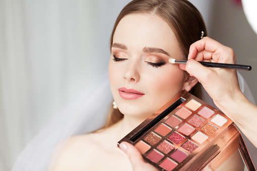
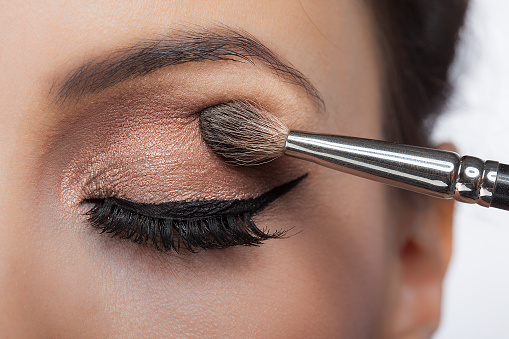
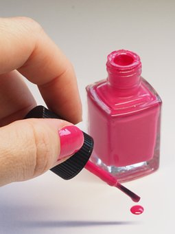

Професионален грим
Професионалният гримкогато е направен както трябва, подчертава естествената ни красота по уникален начин и и помага да изглеждаме страхотно.
Опитният професионален гримьор може да ни помогне най-добре да постигнем безупречен резултат.Той ще ви помогне да постигнете професионални резултати и да изглеждате зашеметяващо без значение каква грим визия сте избрали и за какъв повод.
Грим за събитие
За вашето специално събитие или абитуриентски бал! Професионален дневен или вечерен грим, от нашето Грим студио Фантазия
Предстои ви събитие, на което искате да сте привлекателна и да разкриете своята индивидуална красота? Трябва ви ваучер за Грим студио Фантазия!
Гримьор с опит в киното, телевизията и конкурси за красота ви представя Грим студио Фантазия, в което се работи само с професионални материали!
"Ние ще се погрижим за вашия комфорт и перфектен грим по избор на 100%. Няма значение дали имате повод, или вечеря с приятели. Наш приоритет е да сте удовлетворени и усмихнати след резултата. Дори и да не знаете какво би ви отивало на лицето и кожата, това не е проблем. Професионалист, ще ви консултира гарантирано! Ако не можете да дойдете до студиото, ние ще ви посетим на адрес, за пълния ви комфорт! Обадете ни се и си запишете час, доброто обслужване на клиента е приоритет!"
Продукти

Червило
Един от най-старите и най-често използвани гримове на планетата, е червилото. Едни от първите червила са се правели в Древен Египет, Рим и Гърция. Тогава съставът им е бил на основата на животинска мазнина, пчелен восък и сок от червено цвекло, в комбинация с няколко вредни вещества.
Днес червилата са много по-безопасни от онези времена. В състава им освен даващите структура и цвят субстанции, производителите влагат и много полезни за устните съставки. Те им придават здрав и плътен вид, а някои дори ги предпазват от ултравиолетовите лъчи.
Спирала
4000 години преди Христа в Древен Египет са се използвали много растителни масла, с чиято помощ са се потъмнявали миглите и веждите. Тогава не само жените искали миглите им да са красиви, древната спирала използвали и мъжете, които я нанасяли с помощта на различни малки кости.
Първата спирала е била направена от прах от въглища и желе от петрол. По това време, 1913-а, Ти Ел Уилямс създава много подобна субстанция за своята сестра Мейбъл, името, на която вдъхновява създаването на любимия ни бранд Maybelline.
Днес козметичният свят може да се похвали с над 30 различни четки за нанасяне на спирала, безброй много формули и цветове, в миналото обаче нещата не са стояли точно така, въпреки, че спиралата прави хората красиви вече повече от 6000 години.
Сенки
Заколасе смята, че е една от първите форми на сенките за очи.
За него са най-ранните исторически записи.Той е интересна комбинация от съставки.Най-популярната рецепта включва в себе си-смачкан антимон(вид металоид), олово, окислен мед, охра, захаросани бадеми, пепел, малахит и синкаво-зелен минерал образуван от хидратиран мед.Египтяните вярвали в защитните функции на кола.Например вярвали, че черния кол възвръща загубено зрение и защитава от инфекции.Точно тези вярвания са и причината този вид сенки да са носени, както от жени, така и от мъже.Носели ги хора на всякакви възрасти и от различни социални кръгове.
В Гърция и Рим сенките са използвани с декоративна цел, за разлика от Ирак, където също като в Египет вярвали в защитните функции на сенките.Отново противно на Египет сенките били символ на висок социален статус.Носели се от богатите жени и мъже.Произвеждали се в няколко цвята благодарение на естествени съставки като билки, минерали, камъни, изсушени цветя и кристализирали бои, извлечени от различни растения и животни.
През първите 5 години на 21 век, минералния грим става много популярен.До тогава в състава се използват химични съставки,което повишава нивото на чувствителност и възможността от алергични реакции.Това наложило и производството на минерални сенки,които не предизвикват толкова негативни резултати.Клиентите определено приемат с удоволствие новите сенки.
Парфюми
Първата форма на парфюм се е появила много отдавна, преди хиляди години в Египет. Той се е различавал доста от познатите ни днес аромати, но въпреки това влиза в графата парфюми. Първоначално египтяните са използвали тамяна като парфюм и неговият аромат се е прилагал само за свещените ритуали, но след Златния век, тамянът и другите ароматни масла станали по-достъпни и се използвали не само от фараоните, но и от останалите египтяни. Всеизвестен факт, е, че египтяните са държали много на хигиената си и са се къпели редовно, за разлика от повечето народи по това време. Поради манията си за естетика, след време дори бил издаден закон, който задължавал всички граждани на Египет да се парфюмират поне един път в седмицата. Освен, че са използвали парфюми през целия си живот, египтяните са поставяли в гробниците си шишенца от благоухайните аромати, които да вземат със себе си в отвъдното.
Голяма част от хората по света използват парфюми. Те са се превърнали в неизменен аксесоар от външния вид на всеки човек, поради което парфюмерийния бизнес, е един от най-силно развитите на пазара.
Лакове за нокти
Съвременния ритуал за оцветяване на ноктите води началото си от миналото и то много отдавна. Всъщност, всичко започва в Китай, където още през 3000 г.п.н.е. китайците оцветявали ноктите си с естествени багрила. Членовете на кралската династия поддържали ноктите си дълги, с което показвали високо обществено положение. Оцветителите са били смес от белтъци, восък и бои от зеленчуци а най-често оцветявали ноктите в златно и сребърно.
В Древен Египет интензивността на лака показвала класово различие. Неутралните нюанси са били предназначени за представители на нисшата класа, докато червеният цвят се е считал за символ на кралската власт. Египтяните използвали къна, за да получат червена смес за разкрасяване на ноктите.
Маникюрът е една от най-любимите процедури за женската аудитория. Още по-приятен е фактът, че можете да го направите сами в домашни условия, ако усвоите трите му основни стъпки – поставяне на основа, лакиране и запечатване.
Основата е задължителен елемент от създаването на перфектния маникюр. Тя има ролята да подготви нокътя преди същинското лакиране, но има и други важни функции, които я правят специален продукт.